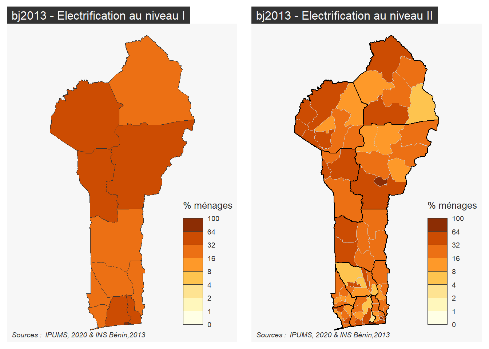
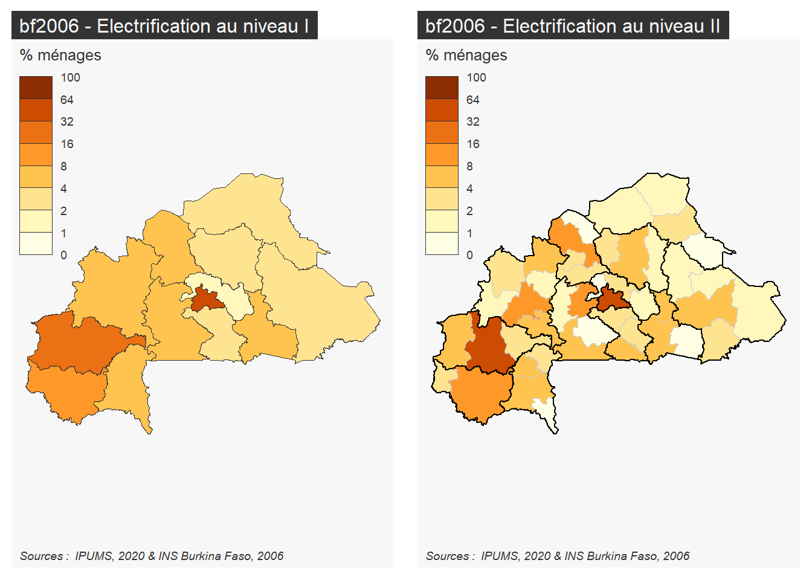
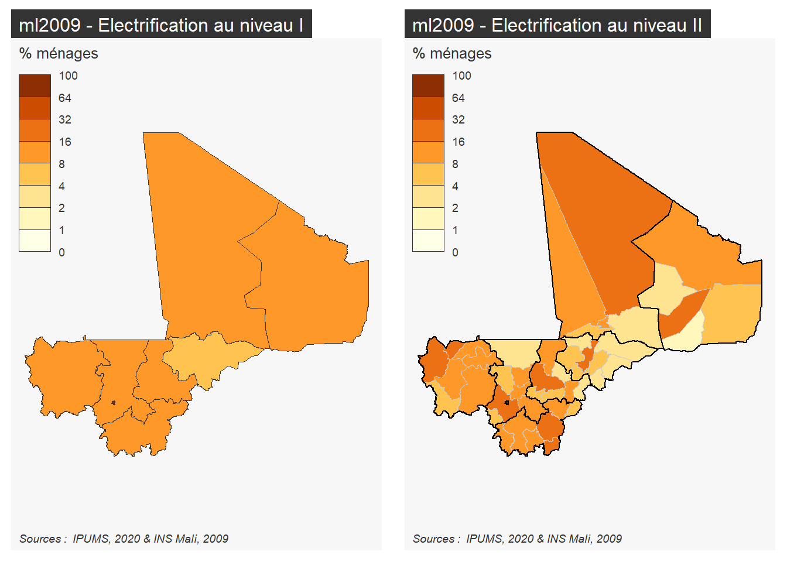
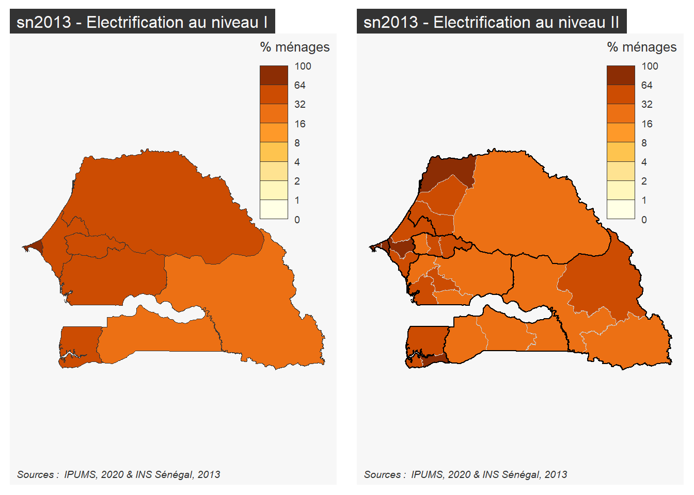
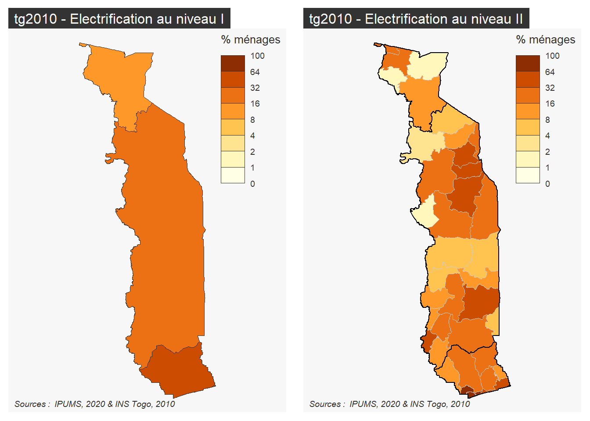

Les objets suivants sont masqués depuis 'package:stats':
filter, lag
Les objets suivants sont masqués depuis 'package:base':
intersect, setdiff, setequal, union
library(sf)
Linking to GEOS 3.9.1, GDAL 3.4.3, PROJ 7.2.1; sf_use_s2() is TRUE
library(mapsf)library(RColorBrewer)library(haven)
5.1 Agrégation des ménages
Nous allons prendre ici un exemple de calcul ou l’unité de compte est ménage et non pas l’individu. A titre d’exemple, on va calculer le nombre de ménages disposant d’électricité en écartant les données inconnues. Pour cela nous allons construire un programme qui effectue les tâches suivantes :
ne conserver que les chefs de ménage (RELATE == 1)
écarter les cas où la variable n’est pas renseignée (ELECTRIC = 1 ou 2)
agréger les données en pondérant par le poids des ménages (HHWT)
calculer le nombre total de ménages disponibles (nbmen)
calculer l part des ménages équipés (pct)
## Chargement des donnéesrp <-readRDS(file ="ipums/rp/rp_fivecountries_samp10pct.RDS")# Convertit les variables haven_labelled en factorsrp<-as_factor(rp, only_labelled=T)table(rp$ELECTRIC)## Calcul au niveau administratif Imen1<-rp %>%group_by(GEOLEV1, ELECTRIC) %>%filter(RELATE ==1, ELECTRIC %in%c(1,2)) %>%summarise(N=sum(HHWT)) %>%mutate(GEOLEV1 =as.character(GEOLEV1)) %>% reshape2::dcast(formula = GEOLEV1~ELECTRIC,value.var ="N") %>%rename(code=GEOLEV1,ELEC_oui=2,ELEC_non=3) %>%mutate(ELEC_tot = ELEC_oui+ELEC_non,ELEC_pct =100* ELEC_oui/ELEC_tot)%>%select(code, ELEC_tot,ELEC_oui,ELEC_non,ELEC_pct)saveRDS(men1, "indic/all/MEN_ELEC_LEV1.RDS")## Calcul au niveau administratif IImen2<-rp %>%group_by(GEOLEV2, ELECTRIC) %>%filter(RELATE ==1) %>%summarise(N=sum(HHWT)) %>%mutate(GEOLEV2 =as.character(GEOLEV2)) %>% reshape2::dcast(formula = GEOLEV2~ELECTRIC,value.var ="N") %>%rename(code=GEOLEV2,ELEC_oui=2,ELEC_non=3) %>%mutate(ELEC_tot = ELEC_oui+ELEC_non,ELEC_pct =100* ELEC_oui/ELEC_tot)%>%select(code, ELEC_tot,ELEC_oui,ELEC_non,ELEC_pct)saveRDS(men2, "indic/all/MEN_ELEC_LEV2.RDS")
5.2 Ajout de la géométrie
Nous procédons ensuite à la jointure avec les fonds de carte afin de pouvoir ajouter les métadonnées qui y sont présentes et aboutir à une visualisation cartographique. Le résultat sera stocké au format sf et au format shapefile afin de pouvoir être réutilisé dans d’autres applications en dehors de R (Magrit, Geoda; …).
A titre d’exemple, nous allons utiliser les fonds de carte simple et les cartogrammes mis au point dans la partie précédente.
5.2.1 RP Bénin, 2013
library(sf)census="bj2013"# Jointure au niveau Imen1<-readRDS("indic/all/MEN_ELEC_LEV1.RDS")map1<-readRDS(paste0("indic/",census,"/","map_lev1_",census,".RDS")) mapdon1 <-left_join(map1,men1) %>%select(code,nom, pays, ELEC_tot, ELEC_oui,ELEC_non, ELEC_pct, geometry)
Joining, by = "code"
saveRDS(mapdon1, paste0("indic/",census,"/","elec_lev1_",census,".RDS"))st_write(mapdon1, paste0("indic/",census,"/","elec_lev1_",census,".shp"),delete_dsn = T, quiet=T)# Jointure au niveau IImen2<-readRDS("indic/all/MEN_ELEC_LEV2.RDS")map2<-readRDS(paste0("indic/",census,"/","map_lev2_",census,".RDS")) mapdon2 <-left_join(map2,men2) %>%select(code,nom, pays, ELEC_tot, ELEC_oui,ELEC_non, ELEC_pct, geometry)
Joining, by = "code"
saveRDS(mapdon2, paste0("indic/",census,"/","elec_lev2_",census,".RDS"))st_write(mapdon2, paste0("indic/",census,"/","elec_lev2_",census,".shp"),delete_dsn = T, quiet=T)# Vérificationmybreaks=c(0,1,2,4,8,16,32, 64,100)mycols =brewer.pal(8,"YlOrBr")par(mfrow=c(1,2))mf_map(mapdon1,type="choro", var="ELEC_pct",breaks=mybreaks,pal=mycols,leg_title ="% ménages",leg_val_rnd =0)mf_layout(title =paste(census,"- Electrification au niveau I"),credits ="Sources : IPUMS, 2020 & INS Bénin,2013",scale =FALSE, arrow=FALSE)mf_map(mapdon2,type="choro", var="ELEC_pct",breaks=mybreaks,pal=mycols,leg_title ="% ménages",leg_val_rnd =0,lwd=0.3,border ="gray80")mf_map(map1,type="base", add=T,lwd=1,col =NA,border="black")mf_layout(title =paste(census,"- Electrification au niveau II"),credits ="Sources : IPUMS, 2020 & INS Bénin,2013",scale =FALSE, arrow=FALSE)

5.2.2 RP Burkina Faso, 2006
Joining, by = "code"
Joining, by = "code"

5.2.3 RP Mali, 2009
Joining, by = "code"
Joining, by = "code"

5.2.4 RP Sénégal, 2013
Joining, by = "code"
Joining, by = "code"

5.2.5 RP Togo, 2010
Joining, by = "code"
Joining, by = "code"

Commentaire : dans le cas du Togo, il serait préférable d’utiliser le niveau administratif I de l’année 2010 plutôt que le niveau harmonisé 1970-2010 qui réduit le pays à 3 régions seulement.
5.3 Prolongements
On peut facilement adapter le programme précédent pour construire de nombeux autres indicateurs d’équipements des ménages.
On peut également lorsque les données le permettent, construire pour un pays une séquence d’évolution d’un indicateur à plusieurs dates.